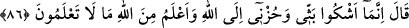

“ya da büsbütün helâk olacaksın!” yani öleceksin “dediler.”
Âyette sevenlerin insanlar (halk) tarafından mutlaka kınanacağına işaret vardır. Şu
âlemde ilk kınanan zat, meleklerin: “Orada fesad çıkaracak, kan dökecek birisini mi
halîfe yapacaksın?” (el-Bakara, 2/30) diyerek kötüledikleri Âdem (a.s.)’dır. Ancak
meseleye biraz daha dikkatlice baktığınızda ilk serzenişin, gerçekte Allah Teâlâ’ya
olduğunu görürsünüz. Çünkü “orada ... halîfe yapacaksın?” diyorlar. Şöyle ki Allah
Teâlâ, sevgi iddiasında bulunan ilk ‘muhib/seven’dir. Bunu “O onları sever” (el-
Mâide, 5/54) âyeti dile getirmektedir. Gamsız kedersiz insanlar, sevenleri kınayıp
dururlar. Muhabbet ehlinin alâmetlerinden biri de Allah’la ilgili olarak hiçbir kınayanın
kınamasından korkmamalarıdır.
Beni istediğin kadar ayıpla ve yer
Ki zenciden siyah rengi yıkayıp çıkaramazsın
86. (Yâkub:) “Ben üzüntü ve kederimi sadece Allah’a arz ediyorum. Ve ben sizin
bilemeyeceğiniz şeyleri Allah tarafından (vahiy ile) biliyorum.” dedi.
Yâkub: “Ben üzüntü ve kederimi” Allah’ın cenabına sığınarak, bunları uzaklaştırmak
hususunda O’nun kapısında yalvarıp yakararak “sadece Allah’a arz ediyorum.”
“”, sahibinin sabredemeyip başkalarına yaydığı üzüntülerin en zor olanıdır. Sanki
oğulları onu tesellî etmek ve şikâyetine çare bulmak için ona söyleyeceklerini
söylediler. Yâkub (a.s.) da onlara şöyle demiş oluyor: “İçimdeki acıları size veya
başkalarına şikâyet etmiyorum ki beni tesellî etmeye kalkasınız.
Halka sırrımı söyleyeyim de hor hakîr mi olayım?
Sana söyleyeyim ki büyüklük sâhibi olayım.
Hüzün, tasadan daha geneldir. Husûsî olan kelimeye (bess) atfedildiği zaman onun
dışında kalan ferdler kasdedilmiş olur. Buna göre mânâ şöyle olmaktadır: “Büyük
hüznümü de az hüznümü de ancak Allah’a arz ederim.”
Şâyed: “Yâkub (a.s.): “Artık bana düşen güzelce sabretmektir.” dedikten sonra “Ah
Yûsuf ’um ah” diyor, sonra da “Ben üzüntü ve kederimi sadece Allah’a arz ediyorum”
diyor. Bu durumda sabır nasıl şikâyetle beraber oluyor?” diye sorulursa şöyle cevap
verilebilir:
Bu sözler, nefsi Yaratıcısına şikâyet etmekten öte bir anlam taşımaz. Bu câizdir.
Nitekim Eyyûb (a.s.) da: “Yâ Rab! Başıma bu dert geldi. Sen merhametlilerin en
merhametlisisin!” (el-Enbiya, 21/83) şeklinde niyazda bulunarak hâlinden şikâyet